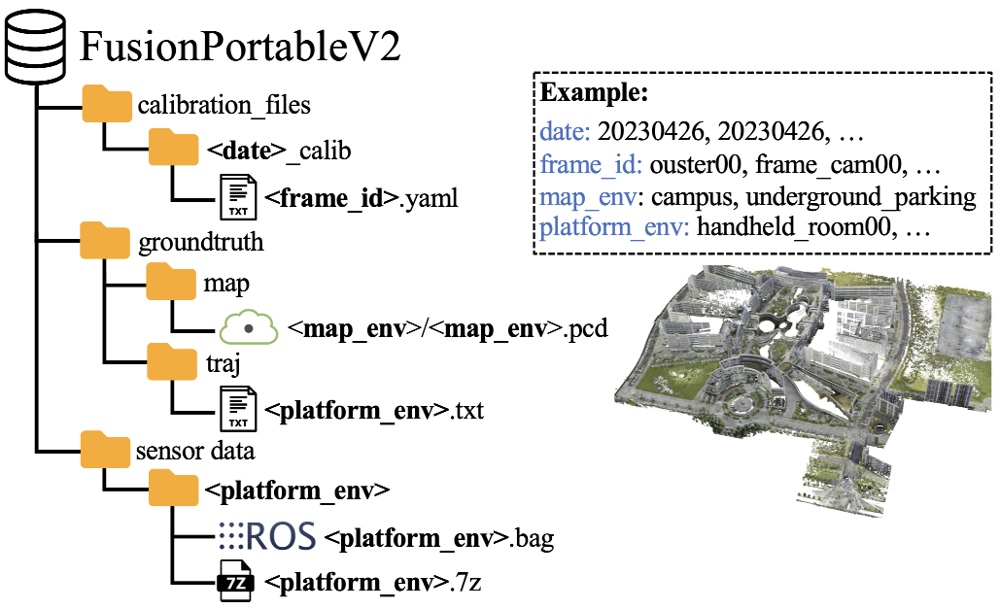
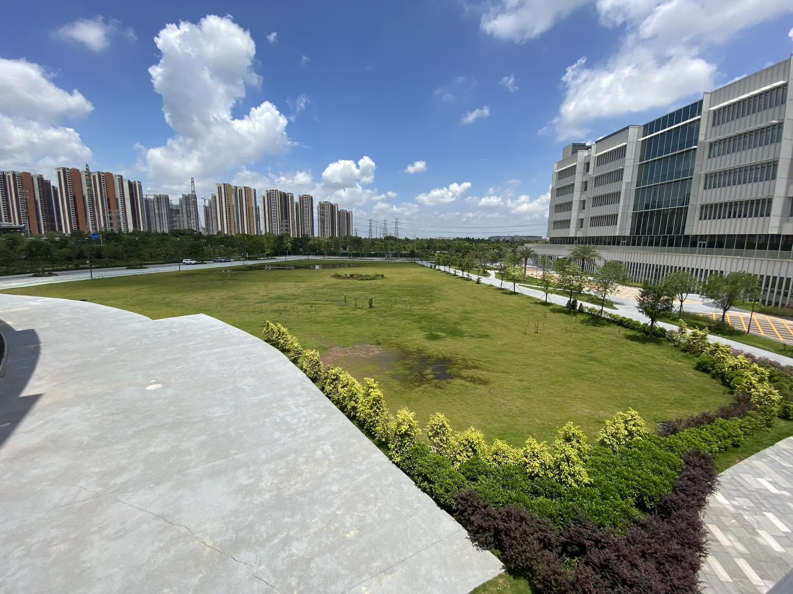
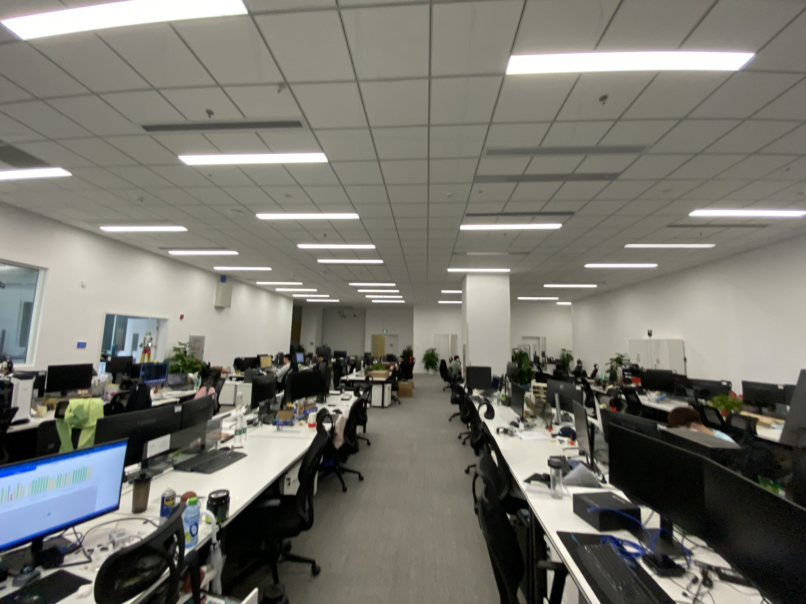
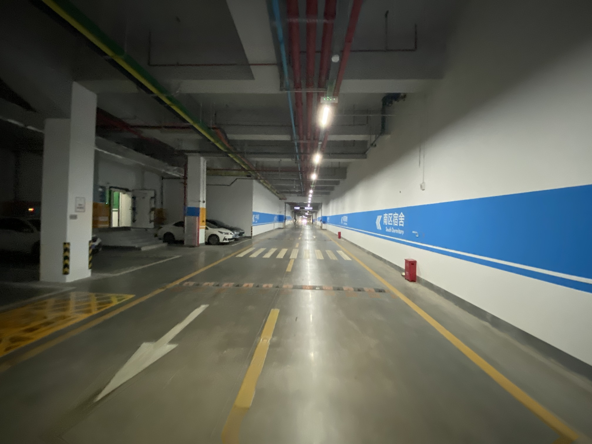
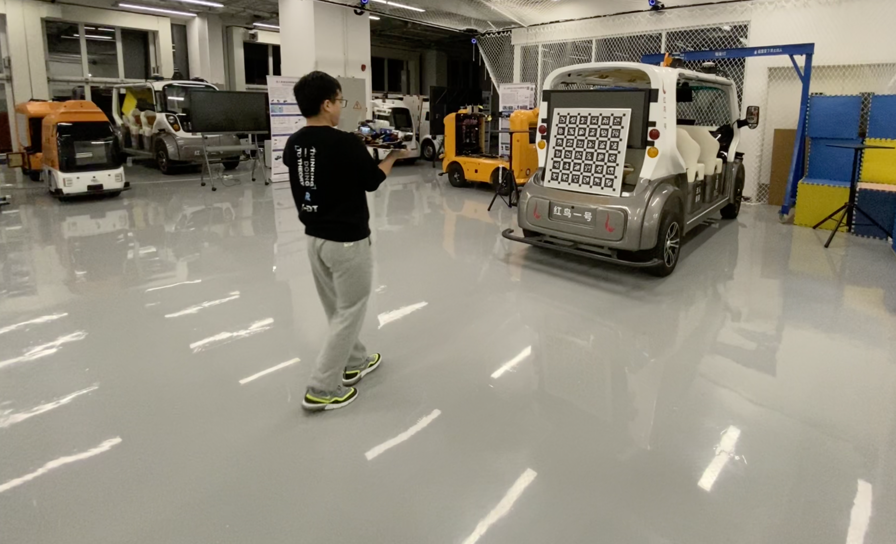
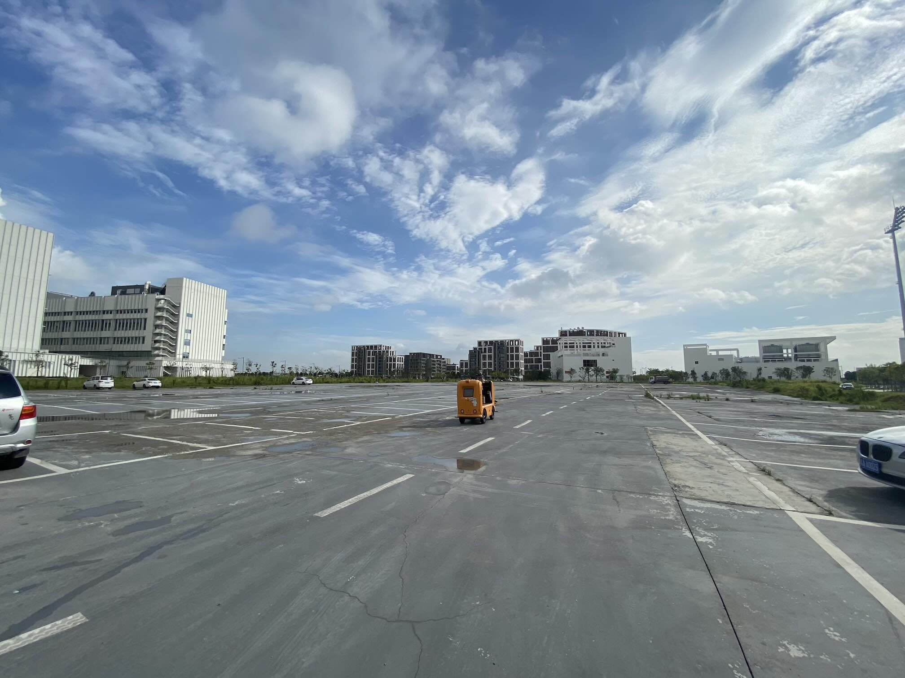
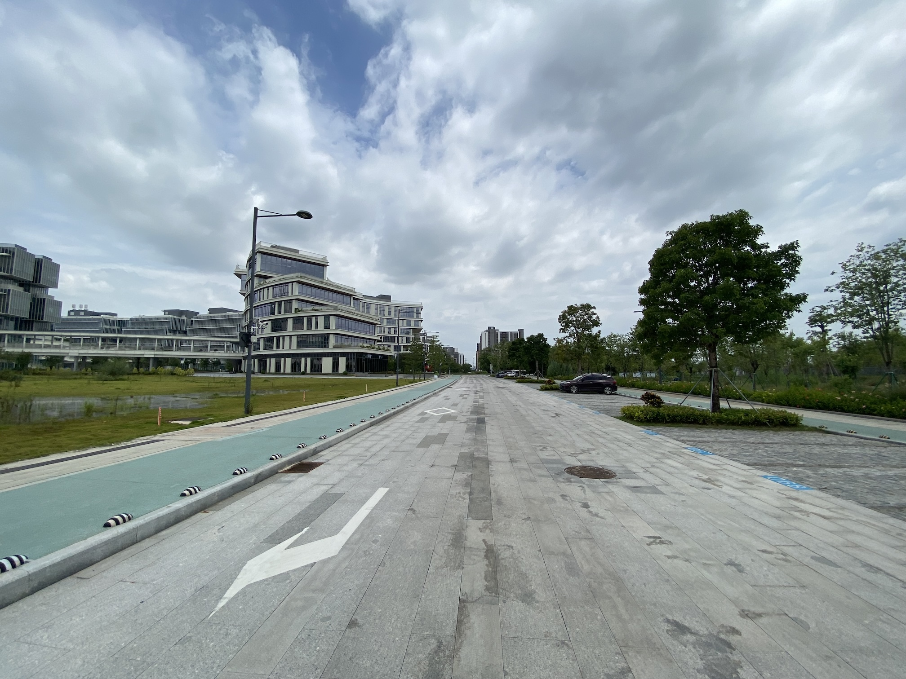
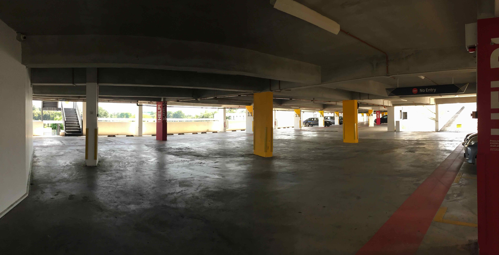
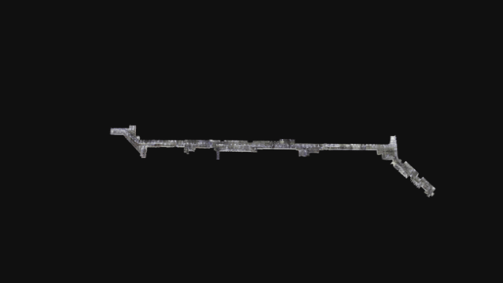

FusionPortable V2-Dataset Details
Organization¶

Note:
1.<frame_id>.yaml store intrinsics and extrinsics of a specific sensor2.
<map_env>.pcd ground-truth map3.
<platform_env>.bag rosbag4.
<platform_env>.7z compressed rosbagTrajectories of Sequences¶


Download Sequence¶
Please click these below links to download:
Calibration files (recommend, long-term maintenance): GithubOr copy this link
https://github.com/fusionportable/calibration_files
Data: Option 1 (recommend, long-term maintenance): Google Drive
Or copy this link
https://drive.google.com/drive/folders/1PYhnf3PlY5r0hbyzWDGTUTPxRMl6SYa-?usp=sharing
Data: Option 2 (not for long-term maintenance): Baidu Wang Pan with the code byj8
Or copy this link
https://pan.baidu.com/s/1lZwK-TNrCyoyC9oWEs8jUg?pwd=byj8
After downloading, please extract compressed ROSBag in the terminal: 7z x <platform_env>.7z
Calibration Files Cooresponding to Sequences¶
Please download the correct calibration files for the sequences.
| Calibration Files | Sequences |
|---|---|
| 20230403_calib | Handheld Sequences |
| 20230426_calib | UGV Seuqneces |
| 20230618_calib | Vehicle Seuqneces |
| 20230912_calib | Legged Robot Seuqneces |
Preview of Sequences¶
Calibration Sequences¶
Hanheld Sequences¶
Picture |
Sequence | Features |
Preview |
|---|---|---|---|
|  | handheld_grass00 | Textureless | preview |
|  | handheld_room00 | Dynmaic | preview |
| handheld_room01 | Dynmaic | preview | |
| handheld_escalator00 | Non-inertial | preview | |
| handheld_escalator01 | Non-inertial | preview | |
|  | handheld_underground00 | Structureless | preview |
Legged Robot Sequences¶
Picture |
Sequence | Features |
Preview |
|---|---|---|---|
| legged_grass00 | Structureless, Deformable | preview | |
| legged_grass01 | Structureless, Deformable | preview | |
|  | legged_room00 | Dynamic | preview |
| legged_transition00 | Illumination, GNSS-deined | preview | |
| legged_underground00 | Structureless | preview | |
UGV Sequences¶
Picture |
Sequence | Features |
Preview |
|---|---|---|---|
|  | ugv_parking00 | Structureless | preview |
| ugv_parking01 | Structureless | preview | |
| ugv_parking02 | Structureless | preview | |
| ugv_parking03 | Structureless | preview | |
|  | ugv_campus00 | Large-Scale | preview |
| ugv_campus01 | Fast Motion | preview | |
| ugv_transition00 | GNSS-Denied | preview | |
| ugv_transition01 | GNSS-Denied | preview | |
Vehicle Sequences¶
Picture |
Sequence | Features |
Preview |
|---|---|---|---|
 |
vehicle_campus00 | Large-Scale | preview |
|
vehicle_campus01 | Large-Scale | preview |
 |
vehicle_street00 | Large-Scale, Dynmaic | preview |
 |
vehicle_tunnel00 | Low Texture and Structure | preview |
 |
vehicle_downhill00 | Illumination | preview |
| vehicle_highway00 | Structureless | preview | |
| vehicle_highway01 | Structureless | preview | |
|  | vehicle_multilayer00 | Perceptual Aliasing | preview |
High-Resolution GT Maps¶
| Environment | Area | Preview |
|---|---|---|
| UGV Campus | 0.36km^2 |  |
| Underground Parking | 0.037km^2 |  |